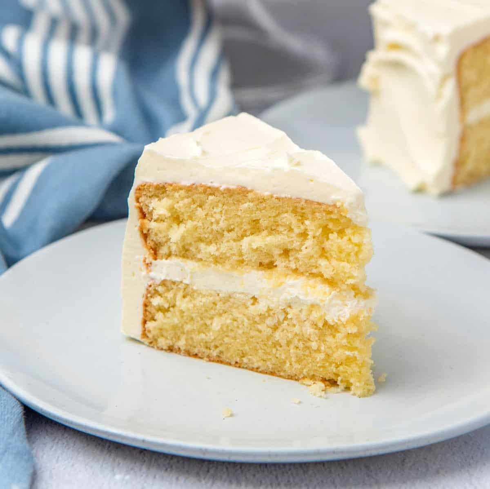

The Best Cake Recipe

Description
Are you ready for a sweet treat that'll make you feel like you're floating on a cloud?
Well, buckle up buttercup because we're about to whip up the fluffiest, most irresistible vanilla cake you've ever tasted! This cake is so light and airy, it practically defies gravity.
So, get your apron on, preheat your oven, and let's get baking this magical masterpiece.
Just be warned, one bite of this cake and you might start speaking in helium-induced high-pitched tones.
Don't say I didn't warn you!
Follow this recipe to make the fluffiest vanilla cake perfect
for any occasion. This recipe includes a list of ingredients as well as
detailed instructions.
Ingredients
- 200 ml water
- 100 ml milk
- 4 cups flour
- 3 eggs
- 2 table unsalted butter
- 1 teaspoon vanilla extract
- 2 teaspoons of baking powder
- 1 teaspoon of baking soda
Instructions
- Preheat your oven to 350 fahrenheit and grease a 9 inch pan with butter.
- In a medium sized bowl, sift together the flour, baking powder, baking soda, and salt. Set aside.
- In a large mixing bowl, beat the sugar and softened butter until light and fluffy, about 2 - 3 minutes.
- Add in the eggs, one at a time, beating well after each addition.
- Gradually mix in the flour mixture, alternating with the milk, beginning and ending with the flour mixture.
- Stir together the vanilla extract.
- Pour the batter into the prepared cake pan and smooth out the top with a spatula.
- Bake for 25-30 minutes, or until a toothpick inserted in the center of the cake comes out clean.
- Remove the cake from the oven and let it cool in the pan for 10 minutes before transferring it to a wire rack to cool completely.
- Once the cake is cool, frost it with your favorite frosting and enjoy!
And there you go! You just made the fluffiest vanilla cake.